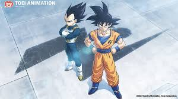

Updated: January 27, 2026
The wait is finally over. After years of rumors, speculation, and the recent detour into the Demon Realm with Dragon Ball Daima, Toei Animation has dropped a Spirit Bomb of news on the fanbase.
During the Dragon Ball Genkidamatsuri event celebrating the franchise's 40th anniversary, two massive anime projects were revealed. If you’ve been waiting for the anime to catch up to the manga, it’s time to power up.
Here is everything we know about Dragon Ball Super: The Galactic Patrol and the surprise announcement of Dragon Ball Super: Beerus.
1. The Main Event: "Dragon Ball Super: The Galactic Patrol"
For nearly eight years, fans have been asking one question: "When are we getting the Moro arc?"
The answer is officially now.
Toei Animation confirmed that production has begun on Dragon Ball Super: The Galactic Patrol. This series will serve as the direct sequel to the Tournament of Power arc and the Dragon Ball Super: Broly movie.
What is the Moro Arc?
Without spoiling too much for anime-only watchers, this arc adapts the Galactic Patrol Prisoner Saga from the manga.
The Villain: We are introduced to Moro (Planet-Eater Moro), an ancient wizard who threatens the entire universe not just with raw power, but with magic that can drain life energy from planets and fighters alike.
The Allies: Goku and Vegeta are recruited by the Galactic Patrol (Jaco's organization) and team up with an elite agent named Merus.
The Stakes: Unlike the tournament setting of the previous arc, this is a battle for survival that spans across space, bringing a darker, more "Z-style" tone back to the series.
Release Window: While production is confirmed, a specific release date wasn't dropped. However, industry whispers suggest we might be looking at a late 2026 or 2027 premiere for this heavy-hitter.
2. The Surprise: "Dragon Ball Super: Beerus" (Fall 2026)
In a move nobody saw coming, the franchise is going back to fix its past.
Announced for a Fall 2026 premiere, Dragon Ball Super: Beerus is described as an "Enhanced Edition" or complete remake of the original Battle of Gods arc that kicked off Dragon Ball Super in 2015.
Why Remake It?
If you remember the original 2015 broadcast, you remember the animation controversy (often dubbed "Episode 5 quality"). This new project aims to rectify that.
Visual Overhaul: Complete re-rendering of footage and new animation cuts.
Story Reconstruction: Producer Akio Iyoku confirmed the story will be "reconstructed" to align more closely with Akira Toriyama’s original drafts, potentially fixing pacing issues and inconsistencies.
Audio Upgrade: Newly recorded voice lines and sound effects.
Think of this as the Dragon Ball Kai treatment, but for Super—polishing the rough start of the series to match the high quality of modern standards.
3. The Hans Zimmer Factor
Perhaps the most shocked reaction from the weekend came from the credits of the 40th-anniversary special video. The score was composed by none other than Hans Zimmer.
The legendary composer (known for The Lion King, Inception, and Man of Steel) created the track "Infinite Future" for the promotional video. While it's unconfirmed if he will score the full anime series, his involvement signals that Dragon Ball is leaning heavily into its status as a global pop-culture juggernaut.
What This Means for the Future
Following the passing of legendary creator Akira Toriyama in 2024, the future of the franchise felt uncertain to many. These announcements are a definitive statement: Dragon Ball is here to stay.
By adapting the manga canon (Moro arc) and polishing the legacy content (Beerus arc), the franchise is firing on all cylinders.
Which project are you more hyped for?
The return of serious battles in the Galactic Patrol arc, or seeing Super Saiyan God Goku vs. Beerus animated the way it was always meant to be?
Stay tuned for more updates as we get them!